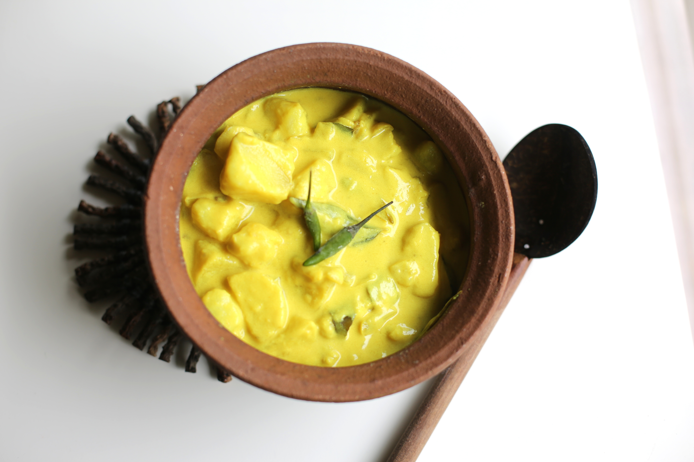

Potato Curry

(picture sourced from (https://akkiskitchen.com/2014/04/16/potato-and-coconut-milk-curry-ala-kiri-hodi/)
Description
Potato curry is quite quick to make, when you get the hang of it, and it tastes amazing with rice, roti, or even just good old bread!
In this version, I have substituted the traditional (and admittedly deliciously rich) coconut milk for skim milk, to cut down on the kilojoules a little, and makes the curry even more accessible!
Ingredients
- Five or so medium-sized washed desiree potatoes
- A small onion
- One green chilli
- Three to five cloves of garlic
- Olive oil
- Dried chilli pieces
- Mustard seeds
- Saffron
- Skim milk
- Chilli powder (optional)
- Baby spinach (optional)
- Curry leaves (optional)
Steps
- Peel and chop the potatoes into squarish bite-size chunks. Place aside.
- Put a little oil into a medium saucepan. Add about a tablespoon of curry pieces, and half a teaspoon of mustard seed, and let that heat up on medium.
- Meanwhile, chop the green chilli, the garlic and the onion.
- When the pan is starting to sizzle a little, toss the chopped garlic, chilli and onion into the pan. (Add the curry leaves at this point too, if you like.) Put the lid on for a few minutes.
- When the onion begins to look softer, browner and slightly transparent, add your chopped potatoes. You should add the saffron (a good tablespoon) and the chilli powder (if you like) on top. Also, pour in about 1/3 cup water, just to keep the bottom wet as the potato cooks through. Pop the lid on and leave on medium heat - this is where you go do something else for tenty to thirty minutes while the potato cooks through. Do stir every five to ten minutes to make sure the potato cooks evenly, and doesn't become stuck to the bottom of the pan.
- When the potato is uniformly soft (but not mushy!), add enough skim milk to cover the potatoes. This will form the broth for the potato curry. (Add the baby spinach at this point if you like.) Leave the lid off, turn the heat down, and allow the milk to slowly come to the boil./li>
- Once it does, you're done! Eat with freshly-cooked rice, or dip bread or roti in the potato broth!